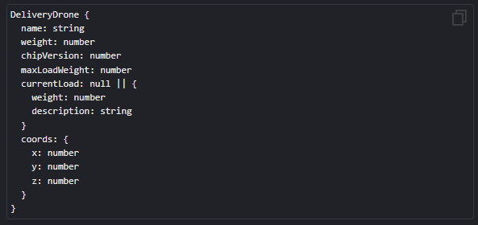

Tarefa: Robot Factory New
Intro
Implemente 3 classes com herança.
BaseRobot
- O construtor pega name, weight, coords, chipVersion e os salva em um objeto.
- Se as coordenadas não forem fornecidas, defina-as como 0.
- Os métodos goForward, goBack, goRight e goLeft dão um step (padrão 1) e movem o robô em step na direção correspondente.
- O método getInfo retorna uma string no formato Robot: %name%, Chip version: %chipVersion%, Weight: %weight%.
FlyingRobot
- Herda de BaseRobot.
- O construtor pega os mesmos argumentos de BaseRobot e os passa para o construtor pai.
- Pode trabalhar com a coordenada z usando os métodos goUp e goDown.
DeliveryDrone
- Herda de FlyingRobot.
- O construtor adicionalmente pega maxLoadWeight e currentLoad (padrão como null) e os salva.
- Possui um método hookLoad que pega um objeto cargo e o salva na propriedade currentLoad se ele estiver vazio e o cargo.weight não exceder o maxLoadWeight do drone.
- Se o drone já possui um currentLoad, não o altere.
- Possui um método unhookLoad que define null para a propriedade currentLoad.
Exemplo:
